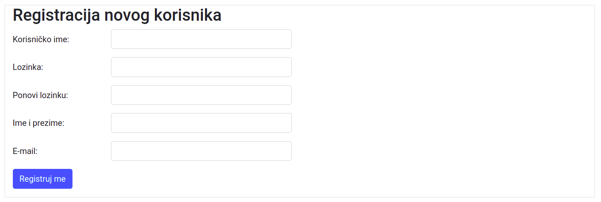
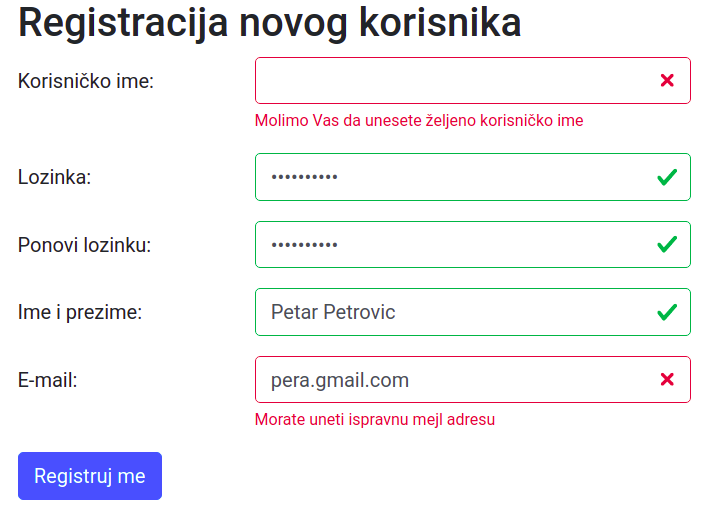
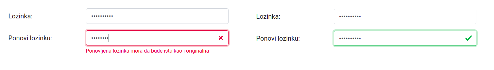
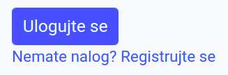
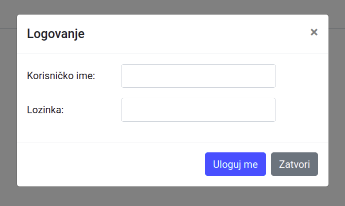

Регистрација и логовање¶
Формулар за регистрацију новог корисника и његова стилизација¶
Започнимо опис ове функционалности тако што ћемо прво приказати
клијентску страну дела апликације за регистрацију нових корисника.
Формулар у који нови корисник уноси своје податке дефинисан је у
засебном шаблону templates/register.html.
<h2>Registracija novog korisnika</h2>
<form method="POST" id="registration" class="needs-validation" novalidate>
<!-- username -->
<div class="form-group row">
<label for="username" class="col-md-2 col-form-label">Korisničko ime:</label>
<div class="col-md-4">
<input type="text" name="username" id="username" value="{{ username }}"
class="form-control" autocomplete="username" required/>
<div class="invalid-feedback">
Molimo Vas da unesete željeno korisničko ime
</div>
</div>
</div>
<!-- password -->
<div class="form-group row">
<label for="password" class="col-md-2 col-form-label">Lozinka:</label>
<div class="col-md-4">
<input type="password" name="password" id="password"
class="form-control" autocomplete="new-password" required minlength="8" />
<div class="invalid-feedback">
Morate uneti jaku lozinku, koja ima najmanje 8 karaktera
</div>
</div>
</div>
<!-- confirm password -->
<div class="form-group row">
<label for="confirmPassword" class="col-md-2 col-form-label">Ponovi lozinku:</label>
<div class="col-md-4">
<input type="password" name="confirmPassword" id="confirmPassword"
class="form-control" autocomplete="new-password" required />
<div class="invalid-feedback">
Ponovljena lozinka mora da bude ista kao i originalna
</div>
</div>
</div>
<!-- name -->
<div class="form-group row">
<label for="name" class="col-md-2 col-form-label">Ime i prezime:</label>
<div class="col-md-4">
<input type="text" name="name" id="name" value="{{ name }}"
class="form-control" autocomplete="name" required />
<div class="invalid-feedback">
Morate uneti ime i prezime
</div>
</div>
</div>
<!-- email -->
<div class="form-group row">
<label for="email" class="col-md-2 col-form-label">E-mail:</label>
<div class="col-md-4">
<input type="email" name="email" id="email" value="{{ email }}"
class="form-control" autocomplete="email" required />
<div class="invalid-feedback">
Morate uneti ispravnu mejl adresu
</div>
</div>
</div>
<!-- submit -->
<input type="submit" name="register" id="register" value="Registruj me"
class="btn btn-primary" />
</form>
Изглед формулара за регистрацију је приказан на следећој слици.
{kind=link}
Формулар садржи следеће елементе:
поље за унос текста у које се уноси корисничко име (
username),поље за унос лозинке (
password),поље за проверу лозинке тиме што се поново унесе (
confirm-password),поље за унос имена и презимена (
name) ипоље за унос мејл адресе (
email).
За унос лозинки се користи елемент input type="password", чиме се
постиже да се унети карактери не виде, за унос мејл адресе елемент
input type="email", чиме се постиже аутоматска провера исправности
унете мејл адресе, док се за остале податке користи input
type="text". Уз свако поље за унос текста налази се и посебан
елемент div који садржи поруку која ће се приказати у случају да
се након валидације на клијентској утврди да нешто није коректно унето
(више речи о валидацији биће дато у наставку).
Уз елементе за унос података наводимо и атрибуте autocomplete,
којима прегледачу указујемо на значење података које се у то поље
уписује (да ли је у питању поље за унос имена, адресе, мејл адресе,
лозинке и слично). Ти атрибути корисницима омогућавају да већину поља
аутоматски попуне. Наиме, савремени прегледачи могу да упамте основне
податке о сваком кориснику, попут имена, адресе, мејл адресе и
слично. Када је коришћењем атрибута autocomplete експлицитно
означено чему служи које поље, прегледач који зна личне податке
корисника може једноставно аутоматски до попуни та поља.
Стилизација формулара урађена је помоћу библиотеке Bootstrap.
За сваки појединачни податак који се уноси креиран је елемент
divкоји садржи контроле за унос тог податка (то је пар контрола које чини натпис тј. елементlabelи поље за унос текста тј. елементinput). Сваки такав елементdivдобио је класуform-groupкоја служи за груписање елемената формулара и класуrowкојом се подешава да садржај треба да се приказује у врсти тј. натписи треба да стоје у истом реду као и поље за унос текста, уместо једно испод другог).Сваком натпису је постављена класа
col-form-labelкоја се користи за натписе у формулару и класаcol-md-2којом се постиже да ширина натипса буде једна шестина ширине окружујућег контејнера (подсетимо се, Bootstrap дели контејнер на 12 колона, а ширина натписа је овом класом постављена на две колоне).Поља за унос текста су стављена у посебан елемент
divкласеcol-md-4чиме се постиже да њихова ширина буде трећина ширине окружујућег контејнера (заузимају 4 од 12 колона). Пошто се у том елементу налазе и поље за унос података и порука о грешци, вероватно је да оне неће моћи да се сложе једно поред другог, већ ће се поруке о грешкама приказивати испод поља за унос података.Дугме
submitдобија Bootstrap класеbtnиbtn-primaryкоје одређују његов изглед (али не и функционалност).
Неки атрибути који су употребљени у овом формулару се односе на
валидацију података из тог формулара и биђе описани у наставку (такви
су, на пример, required, minlength и invalid-feedback).
Валидација формулара на клијентској страни¶
Имплементирајмо и валидацију формулара на клијентској страни, помоћу језика JavaScript. На наредној слици приказан је изглед формулара након валидације.
{kind=link}
За основну валидацију користићемо уграђену подршку језика HTML5, док ћемо за напреднију валидацију користити провере које сами ручно имплементирамо у језику JavaScript.
Ниједно поље не сме да остане празно, па свим пољима додајемо атрибут
required.Провера исправности мејл адресе се аутоматски врши тиме што за унос мејл адресе користимо поље типа
input type="email".Инсистираћемо и да лозинка мора да садржи бар 8 карактера, што можемо осигурати постављањем атрибута
minlength="8"у поље за унос лозинке.
Прегледач приликом слања података из формулара тј. притска на дугме
submit аутоматски врши све провере исправности одређене HTML5
дефиницијама и приказује своје подразумеване поруке о грешкама које се
појављују у искачућим прозорчићима изнад поља за унос података (тачан
текст порука зависи од самог прегледача). Библиотека Bootstrap пружа
могућност да се у случају грешке корисницима не прикажу те
подразумеване, већ да се прикажу прилагођене поруке о грешкама и то у
за то посебно намењеним HTML елементима (уместо у искачућим
прозоричићима). У овом примеру користимо такву могућност, тако што
поред свако поља за унос података постављамо елемент div који
садржи прилагођену поруку о грешци, на српском језику. Елементи који
садрже прилагођене поруке о грешкама морају да имају класу
invalid-feedback и јако је важно да буду „браћа” поља за унос (у
нашем примеру су оба деца истог окружујућег помоћног елемента
div). Могуће је и да се у случају иправног уноса података у поља
формулара кориснику прикажу прилагођене поруке о томе. Ти елементи
треба да имају класу valid-feedback и такође треба да буду „браћа”
поља за унос.
Пошто ми не желимо да се слањем формулара аутоматски прикажу
подразумеване поруке о грешкама (јер смо припремили прилагођене
поруке), формулару додајемо атрибут novalidate. Када то урадимо
провера и приказ подразумеваних порука о грешакама се неће вршити
аутоматски приликом слања података из формулара тј. притиска на дугме
submit, али ћемо и даље у склопу JavaScript скрипта моћи да
одреагујемо на догађај submit и тада позовемо функцију
checkValidity, којом ћемо активирати уграђену HTML5 валидацију. Та
функција ће нам вратити true ако и само ако су сва поља исправно
попуњена. Приликом провере валидности, током позива функције
checkValidity, прегледач ће поља која су исправна означити
псеудокласом :valid а она која нису исправна псеудокласом
:invalid и аутоматски ће свим пољима придружити подразумеване
поруке о грешкама (у случају исправних података подразумевано се не
приказује никаква порука). Библиотека Bootstrap неће те поруке
приказати (приказаће се поруке које се налазе у елементима означеним
класама valid-feedback и invalid-feedback), али ће на основу
псеудокласа :valid и :invalid додељених пољима за унос
података стилизовати та поља и одабраће које поруке треба да се
прикажу.
Поред уграђене валидације попуњености свих поља, исправности мејл адресе и дужине лозинке, желимо да осигурамо да се лозинка и поновљена лозинка поклапају.
{kind=link}
Проверу тог додатног услова ћемо вршити у склопу JavaScript функције
checkPassword, коју ћемо ручно имплементирати и позивати након
позива функције checkValidity. У функцији checkPassword ћемо
имати потребу да променимо статус исправности неког поља
(тј. псеудокласу која му је додељена). Заиста, могуће је, на пример,
да је прегледач поље за поновљену лозинку означио као исправно, јер је
непразно, а ми желимо да га означимо као неисправно, јер смо накнадном
провером утврдили да се лозинке не поклапају. То можемо да урадимо
методом setCustomValidity. Ако овој методи проследимо неку
непразну ниску, поље се означава као неисправно (добија псеудокласу
:invalid) и та ниска му се придружује као порука о грешци (додуше,
ми те поруке не приказујемо). Ако проследимо празну ниску, то поље се
означава као исправно (добија псеудокласу :valid).
Да резимирамо, валидацију формулара вршићемо када се притисне дугме
submit. Реаговаћемо на тај догађај и у склопу његове обраде позове
метода checkValidity() којом се врши уграђена валидација. Одмах
након уграђених провера, позваћемо и функцију checkPassword којом
ћемо проверити једнакост лозинки. Ако било која провера валидности не
успе, методом event.preventDefault() зауставићемо слање података
из формулара.
Да би библиотека Bootstrap кренула да стилизује поља и приказује
поруке у складу са исходом провере о грешкама, формулар мора да добије
класу was-validated. Тај атрибут ћемо формулару доделити након што
је извршена валидација (било успешно, било неуспешно), на крају
функције којом се реагује на догађај submit.
На крају, додајмо да се провера једнакости лозинки не врши само када
се шаљу подаци из формулара, већ сваки пут када се нека од две унете
лозинке промени. То можемо остварити тако што позив функције
checkPassword региструјемо као реакцију на догађај подизања
тастера тастатуре у неком од поља за унос лозинке.
Иако у функцији checkPassword променимо статус валидације методом
setCustomValidity, тај статус се неће приказивати све док се
формулару не дода класа was-validated, тј. док се не притисне
дугме submit. Ако бисмо класу was-validated формулару додали
унутар функције checkPassword, приказале би се грешке за сва поља
у формулару, а то не желимо, јер док попуњавамо лозинку остала поља
нису још попуњена и нема потребе да се због тога приказују
грешке. Један начин да се прикаже статус исправности само за поља за
унос лозинки је да уместо коришћења псеудокласа valid и
invalid које су део уграђеног HTML5 механизма валидације,
употребимо посебне Bootstrap класе за стилизацију поља за унос
података. Исправним пољима ћемо додати класу is-valid, а
неисправним класу is-invalid. Додељивањем ових класа, статус
исправности поља се приказује одмах, без обзира на то да ли формулар
има класу was-validated или нема. У случају конфликта предност
имају пседуокласе које су део HTML5 валидације. Дакле, ако елемент има
Bootstrap класу is-valid, али псеудокласу invalid која му је
постављена током рада методе checkValidity или методом
setCustomValidity, он ће бити приказан као неисправан. Зато је уз
додељивање класа is-valid тј. is-invalid и даље потребно
позивати и методу setCustomValidity (до тренутка док се не кликне
дугме submit, класе су те које одређују стилизацију, а након тог
тренутка, када се формулару дода класа was-validated, псеудокласе
преузимају ту улогу).
На основу свега реченог долазимо до следећег JavaScript скрипта за клијентску валидацију.
<script type="text/javascript">
// DOM objekti koji odgovaraju formularu i poljima za unos lozinke
var form = document.forms.registration;
var passwordInput = form.password;
var confirmPasswordInput = form.confirmPassword;
// lozinka se proverava prilikom svake promene
confirmPasswordInput.addEventListener("keyup", checkPassword)
passwordInput.addEventListener("keyup", checkPassword)
// funkcija za proveru poklapanja lozinki
function checkPassword() {
var OK = true;
if (confirmPasswordInput.value != passwordInput.value) {
confirmPasswordInput.setCustomValidity("Lozinke se ne poklapaju");
confirmPasswordInput.classList.add("is-invalid");
confirmPasswordInput.classList.remove("is-valid");
OK = false;
} else {
confirmPasswordInput.setCustomValidity("");
confirmPasswordInput.classList.add("is-valid");
confirmPasswordInput.classList.remove("is-invalid");
}
// TODO: proširiti ovu funkciju zahtevom da lozinka sadrži i slova
// i cifre i specijalne karaktere
return OK;
}
// provera prilikom slanja podataka iz formulara
form.addEventListener("submit", function(event) {
// vršimo ugrađene HTML5 provere i dodatnu proveru lozinki
if (!form.checkValidity() || !checkPassword()) {
// sprečavamo slanje
event.preventDefault();
event.stopPropagation();
}
// označavamo da je formular proveren
form.classList.add("was-validated");
});
</script>
Табела о корисницима¶
Податке о свим регистрованим корисницима ћемо чувати у склопу базе
података у табели user, која је дефинисана на следећи начин.
CREATE TABLE user (
username VARCHAR (60) PRIMARY KEY,
password VARCHAR (32),
name VARCHAR (50),
email VARCHAR (50)
);
Серверски скрипт за регистрацију¶
Прикажимо сада серверски део апликације. Регистрација корисника ће се
вршити путем путање /register. Ако се на ту путању пошаље захтев
GET, тада се само приказује формулар за регистрацију. Са друге стране,
ако се пошаље захтев POST, тада се прво врши основна валидација тих
података на серверској страни (без обзира на то што је валидација већ
урађена на клијентској страни) и ако је све успешно, проверава се да
ли је одабрано корисничко име расположиво. Ако јесте, корисник се
региструје, пријављује се порука о успешној валидацији (коришћењем
флешованих порука), корисник се одмах логује (коришћењем сесије) и
пребацује се на главну страну сајта (коришћењем редирекције). Ако дође
до било какве грешке (серверска валидација не прође или је корисничко
име већ одабрано), пријављује се грешка (коришћењем флешованих
порука).
@app.route("/register", methods=['GET', 'POST'])
def register():
if request.method == "POST":
if validate_register_form(request.form):
username = request.form["username"]
if not username_available(username):
flash("Korisničko ime " + username + " je već odabrano, " +
"molimo vas da pokušate ponovo", "danger")
return render_template("register.html",
name=name, email=email)
else:
password = request.form["password"]
name = request.form["name"]
email = request.form["email"]
register_user(username, password, name, email)
session["username"] = username # korisnika automatski i logujemo
flash("Korisnik " + username + " je uspešno registrovan", "success")
return redirect(url_for("index")) # vraćamo se na početnu stranu
else:
flash("Pogrešno navedeni podaci u formularu za registraciju", "danger")
username = request.form["username"]
name = request.form["name"]
email = request.form["email"]
return render_template("register.html",
username=username, name=name, email=email)
else:
return render_template("register.html")
Анализирајмо укратко претходну функцију. У првој линији се она везује
за путању /register и допушта се слање захтева и преко метода GET
и преко метода POST. Основно гранање је на основу употребљеног метода.
Ако је метод очитан из поља request.method једнак "POST"
обрађују се подаци из формулара, а ако није, тада знамо да је у питању
метода GET и помоћу render_template приказујемо раније описани
шаблон који садржи формулар за регистрацију (он је коришћењем
наслеђивања шаблона уклопљен у ширу веб-страну). Ако су подаци послати
преко методе POST, позивамо функцију validate_register_form којом
се врши основна провера провера тих података. Наредна, веома
једноставна, имплементација те функције само проверава да ли су сви
потребни подаци послати (наравно, овде је могуће додати додатне
провере).
def validate_register_form(form):
if not "username" in form or not form["username"].strip():
return False
if not "password" in form or not form["password"].strip():
return False;
if not "name" in form or not form["name"].strip():
return False
if not "email" in form or not form["email"].strip():
return False
return True
Ако је валидација успешно извршена, очитава се предложено корисничко
име и проверава се да ли је корисничко име доступно. То се врши
наредном функцијом, која врши упит ка бази података којим се проналази
број корисника у табели user који имају то корисничко
име. Корисничко име је слободно ако и само ако је тај број корисника
једнак нули.
def username_available(username):
count = query_db("SELECT COUNT(*) FROM user WHERE username=?", (username, ), True)[0]
return count == 0
Ако је корисничко име слободно, тада прикупљамо остале податке из POST
захтева и позивамо функцију register_user која ће регистровати
корисника тако што ће податке о њему уписати у базу, у табелу
user. Имплементацију ове функције ћемо описати касније.
Након што региструјемо корисника аутоматски ћемо га улоговати, тако
што ћемо његово корисничко име уписати у сесију (наредбом
session["username"] = username). На многим сајтовима се након
регистрације очекује да корисник потврди своју мејл адресу, тако да се
логовање не врши аутоматски, већ тек након потврде мејл адресе.
На крају, позивом return redirect(url_for("index")) преусмеравамо
корисника на долазну страну сајта, која је везана за путању / и
која се приказује функцијом index (та функција само приказује
шаблон index.html који садржи опис долазне стране). Пошто смо пре
тога поставили флеш-поруку о успешном логовању, она ће бити приказана
у склопу долазне стране.
@app.route("/")
def index():
return render_template("index.html");
Ако приликом регистрације дође до неке грешке, поставља се флеш-порука
која ближе описује ту грешку и поново се приказује формулар за
регистрацију (тако што се позове render_html("registration.html",
...) чиме се шаље GET захтев за том страном). Функцији
render_html се као додатни параметри шаљу подаци које је корисник
раније унео у формулар (сви осим лозинки), да би се приликом поновног
приказа формулара очувале вредности у тим пољима (изузетак је приказ
формулара након што се установи да је корисничко име већ заузето, када
се корисничко име које је било унето у формулар брише).
Хеширање лозинки¶
Да бисмо описали имплементацију функције за регистрацију, потребно је
да објаснимо како се лозинке обично складиште у бази. Прва идеја је да
табела садржи сирове лозинке, онакве какве су корисници унели. То
решење је катастрофално лоше са становишта безбедности података, јер
би било који упад на сајт који би омогућио злонамерним корисницима
увид у вашу базу података открио лозинке свих ваших корисника. Пошто
корисници често користе исте (или сличне) лозинке на више сајтова,
тиме би они били озбиљно угрожени. Стога се користи техника
хеширања лозинки. Пре него што се лозинка упише у базу, на њу се
примени трансформација одређена неком познатом криптографском
хеш-функцијом (такве су функције md5, sha1, …). На пример, када се
на лозинку pera123 примени функција sha1, добија се хеш-вредност
be105a6ee5530d17d9f234baa85ac846b463edd6. Хеш-функције имају
особину да је јако лако на основу лозинке добија хеш-вредност, а да је
јако тешко (практично немогуће) на основу хеш-вредности одредити
лозинку која је дала ту хеш-вредност. Додатно, иако ове функције нису
бијективне, јако је мала вероватноћа да две различите лозинке дају
исту хеш вредност. Мале промене лозинке доводе до потпуно другачијих
хеш-вредности. Ово омогућава да се провера коректности лозинке изврши
тако што се за лозинку коју корисник унесе приликом логовања израчуна
хеш-вредност и да се онда тако добијена хеш-вредност упореди са оном
која је складиштена у бази података. Ако се хеш-вредности не поклопе,
тада је лозинка сигурно неисправна, а ако се поклопе, тада је са
вероватноћом од преко 99,99…99% лозинка исправна (каже се да је већа
вероватноћа да хардвер рачунара погреши у неком израчунавању, него да
две различите лозинке дају исту хеш вредност).
Иако хеширање наизглед решава проблем хакерског упада у табелу са
информацијама о вашим корисницима, нажалост, проблем није у потпуности
решен. Наиме, људи јако често користе неке лозинке које су правилне и
које се једноставно памте. Истраживања показују да су 10 најчешће
коришћених лозинки 123456, 123456789, qwerty,
password, 12345, qwerty123, 1q2w3e и
12345678. Често се користе и имена, комбинације имена и година или
датума рођења и слично. На интернету су доступне табеле (тзв. rainbow
tables) које садрже огромне листе хеш-вредности за огроман број
лозинки за које се могу претпоставити да ће бити често коришћене.
Помоћу тих табела и откривених хеш-вредности јако лако могу
реконструисати често коришћене лозинке.
Заштита од напада овог типа је да се пре хеширања лозинке „засоле”. То значи да се лозинкама дода нека помоћна ниска карактера тј. бајтова (тзв. „со”). Препоручује се да се за сваку лозинку употреби посебна, насумично генерисана „со”. „Со” није тајни податак, па се може сачувати у бази података уз саму лозинку.
У нашој имплементацији хеширање и „сољење” лозинки је извршено
коришћењем библиотеке bcrypt. Функција bcrypt.gensalt()
насумично генерише „со” за тренутну лозинку (добијена „со” је низ
бајтова). Након тога функција bcrypt.hashpw на основу лозинке и
соли гради ниску која садржи хеш-вредност и „со” (оне се спајају у
једну ниску карактера), која се може уписати у базу на поље предвиђено
за унос лозинке.
На основу свега изреченог, долазимо до следеће имплементације функције за регистрацију новог корисника.
def register_user(username, password, name, email):
db_conn = get_db()
cursor = db_conn.cursor()
hash_and_salt = bcrypt.hashpw(password.encode(), bcrypt.gensalt())
cursor.execute("INSERT INTO user VALUES (?, ?, ?, ?)", (username, hash_and_salt, name, email))
db_conn.commit()
Приликом логовања врши се провера коректности лозинке. Из базе читамо
ту ниску за дато корисничко име. Ако читање не успе (јер корисничко не
постоји), пријављујемо да логовање није успело. Ако успе, онда знамо
хеш-вредност лозинке и употребљену „со” и позивом функције
bcrypt.checkpw проверавамо коректност унете лозинке. Њој се
прослеђује лозинка коју је кориснику унео (у облику низа бајтова) и
ниска која чува „со” и хеш-вредност праве лозинке коју смо прочитали
из базе и она аутоматски из те ниске издваја „со”, израчунава
хеш-вредност унете лозинке и упоређује је са хеш-вредношћу праве
лозинке која је издвојена из ниске прочитане из базе.
def check_login(username, password):
row = query_db("SELECT password FROM user WHERE username=?", (username, ), True)
if not row:
return False
hash_and_salt = row[0]
return bcrypt.checkpw(password.encode(), hash_and_salt)
Дугмад за логовање/излогивање¶
На свакој страни сајта ћемо корисницима пружити могућност да се
улогују (ако нису улоговани) тј. да се излогују (ако су
улоговани). Проверу да ли је корисник тренутно улогован можемо
извршити провером да ли корисничко име уписано у сесију тј. да ли је
дефинисана променљива session["username"]. Ако јесте, приказаћемо
дугме којим ће се активирати формулар за логовање и испод њега линк
који води ка путањи за регистрацију новог корисника
(url_for("register")), а ако није, приказаћемо линк који води ка
путањи за коју је везана функција за излогивање
(url_for("logout")).
<div class="float-right">
{% if not session["username"] %}
<button type="button" class="btn btn-primary btn-sm"
data-toggle="modal" data-target="#loginModal">
Ulogujte se
</button><br />
<small><a href="{{ url_for('register') }}">Nemate nalog? Registrujte se</a></small>
{% else %}
<a href="{{ url_for('logout') }}">Izlogujte se</a>
{% endif %}
</div>
Дугме за логовање је приказано на наредној слици.
{kind=link}
Формулар за логовање и његова стилизација¶
Кренимо од описа формулара за унос корисничког имена и лозинке. Тај формулар ће бити приказан у оквиру модалног прозора, који се веома једноставно реализује уз помоћ библиотеке Boostrap.
Изглед формулара у модалном прозору је приказан на следећој слици.
{kind=link}
Модални прозор се реализује као елемент div који има класу
modal. Унутар њега се налази елемент div који има класу
modal-dialog, а унутар њега три елемента div: заглавље које
има класу modal-header, централни део који има класу
modal-body и подножје које има класу modal-footer. У заглављу
је приказан наслов и дугменце са ознаком × којом се модални прозор
може искључити (што је подешено атрибутом data-dismiss="modal"). У
централном делу се налазе два поља за унос података: једно за унос
корисничког имена, а друго за унос лозинке. У подножју се налази дугме
за слање података из формулара (дугме submit) и дугме за затварање
модалног прозора (што је подешено атрибутом data-dismiss="modal").
<div class="modal" id="loginModal">
<div class="modal-dialog">
<form method="post" action="{{ url_for('login') }}">
<div class="modal-content">
<!-- zaglavlje modalnog prozora -->
<div class="modal-header">
<h5 class="modal-title">Logovanje</h5>
<!-- dugme × za isključivanje prozora -->
<button type="button" class="close" data-dismiss="modal">
<span>×</span>
</button>
</div>
<!-- telo modalnog prozora -->
<div class="modal-body">
<!-- polje za unos korisničkog imena -->
<div class="form-group row">
<label for="username" class="col-md-4 col-form-label">Korisničko ime:</label>
<input type="text" id="signinUsername" name="username"
class="form-control col-md-6" autocomplete="username" />
</div>
<!-- polje za unos lozinke -->
<div class="form-group row">
<label for="password" class="col-md-4 col-form-label">Lozinka:</label>
<input type="password" id="signinPassword" name="password"
class="form-control col-md-6" autocomplete="current-password" />
</div>
</div>
<!-- podnožje modalnog prozora -->
<div class="modal-footer">
<button type="submit" class="btn btn-primary">Uloguj me</button>
<button type="button" class="btn btn-secondary" data-dismiss="modal">Zatvori</button>
</div>
</div>
</form>
</div>
</div>
Модални прозор је подразумевано сакривен и приказује се притиском на дугме за логовање. Подсетимо се, оно је реализовано на следећи начин:
<button type="button" class="btn btn-outline-primary btn-sm"
data-toggle="modal" data-target="#loginModal">
Параметром data-toggle постављено је да то дугме буде оно које
укључује модални прозор, док је параметром data-target постављен
идентификатор модалног прозора који ће се укључивати на ово дугме.
Валидацију овог формулара нећемо вршити на клијентској страни. Наиме, ако се не унесу подаци или се унесу погрешни подаци одмах ће се утврдити да корисник не може да се улогује и биће свакако пријављена грешка.
Серверски скрипт за логовање и излогивање¶
Логовање је везано за путању /login и функцију login. Она
податке (корисничко име и лозинку прихвата преко метода POST). Ако се
овој путањи приступи преко методе GET, биће пријављена грешка (помоћу
флеш-поруке).
@app.route("/login", methods=['GET', 'POST'])
def login():
if request.method == "POST":
OK = True
if validate_login_form(request.form):
username = request.form["username"]
password = request.form["password"]
if check_login(username, password):
session["username"] = request.form["username"]
else:
OK = False
else:
OK = False
if OK:
flash("Uspešno ste se ulogovali", "success")
else:
flash("Pogrešno korisničko ime ili lozinka", "danger")
else:
flash("Greška u prenosu podataka o logovanju", "danger")
return redirect(url_for("index"))
Валидација форме на серверској страни само проверава да ли су унети корисничко име и лозинка.
def validate_login_form(form):
if not "username" in form or not form["username"].strip():
return False
if not "password" in form or not form["password"].strip():
return False
return True
Ако валидација успе, тада проверавамо коректност лозинке коришћењем
функције check_login, коју смо раније описали. Ако су корисничко
име и лозинка исправни, уписујемо корисничко име у сесију. У
зависности од тога да ли је корисник успешно улогован или је дошло до
неке грешке, постављамо одговарајућу флеш-поруку. У оба случаја
корисника шаљемо поново на долазну страну сајта, где ће му се та
порука приказати.
Функција којом тренутно улоговани корисник може да се излогује назива
се logout и повезана је са путањом /logout (којој се може
приступити преко GET метода, пошто јој се не преносе никакви подаци).
Из сесије се брише корисничко име и корисник се пребацује на долазну
страну сајта.
@app.route("/logout")
def logout():
session.pop("username", None)
return redirect(url_for("index"))